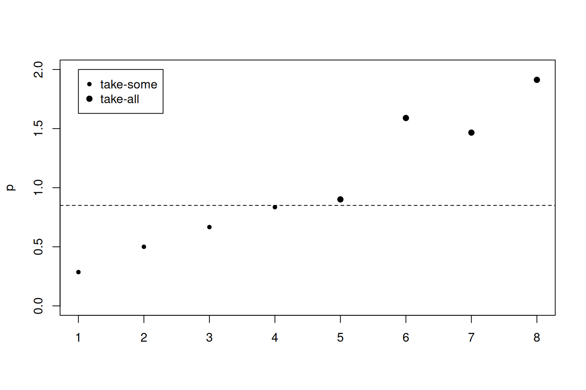

pi <- function(x, n) {
n * (x / sum(x))
}
# Population with 13 units.
x <- c(1:8, 9.5, 10, 20, 20, 30)
alpha <- 0.15
# Units 11, 12, and 13 have an inclusion probability
# greater than 1 - alpha.
which(pi(x, 8) >= 1 - alpha)
#> [1] 11 12 13
# Now units 9 and 10 have an inclusion probability
# greater than 1 - alpha.
which(pi(x[1:10], 5) >= 1 - alpha)
#> [1] 9 10
# After two rounds of removal all inclusion probabilities
# are less than 1 - alpha.
any(pi(x[1:8], 3) >= 1 - alpha)
#> [1] FALSEWhen drawing a sample of size \(n\) from a population of size \(N\), where each unit is drawn proportional to some measure of size \(x_{i}\), \(i=1,\ldots,N\), the probability that the \(i\)th unit is included in the sample is
\[ \pi_{i} = n x_{i} / \sum_{i=1}^{N} x_{i}. \]
In theory these inclusion probabilities should be less than 1; in practice units with a large \(x_{i}\) can have an inclusion probability greater than 1, especially when \(n\) is large. The usual procedure to deal with these units is to put them in a special take-all stratum so that they are always included in the sample, essentially fixing their inclusion probabilities at 1, with the remaining units (the take-some units) drawn at random. The usual algorithm used by, say, sampling::inclusionprobabilities() repeatedly moves units into the take-all stratum and recalculates the inclusion probabilities for the remaining units until all inclusion probabilities are less than 1.1
Sequential poisson sampling is a bit more complicated because it can be useful to place units with an inclusion probability greater than \(1 - \alpha\), for some small \(\alpha\), into the take-all stratum. Unless \(\alpha = 0\), the usual algorithm for finding take-all units can put units into the take-all stratum that have an inclusion probability less than \(1 - \alpha\). We can see this with the following example (with a larger value for \(\alpha\)).
Although all inclusion probabilities are less than \(1 - \alpha\) after two rounds of placing units into a take-all stratum, the inclusion probability for unit 9 would also be less than \(1 - \alpha\) despite it being in the take-all stratum.
pi(x[1:9], 4)[9] >= 1 - alpha
#> [1] FALSEThis means that units have to be considered one at a time, from largest to smallest, to determine if they belong in the take-all stratum. Rather than doing this as a loop and potentially calculating the inclusion probabilities many times for most units, we can calculate a sequence of inclusion probabilities for the \(n\) units with the largest sizes
\[ p_{i} = \frac{x_i i}{\bar{x} + \sum_{j=1}^{i} x_j}, \]
where \(\bar{x}\) is the total size for all remaining units (those always in the take-some stratum) in the population. If units are sorted in increasing order of size, then the \(i\)th element of this sequence gives the largest inclusion probability after putting the \(n - i\) largest units in the take-all stratum.
Finding the take-all units is now simply a case of finding the smallest integer \(i^{*}\) (if one exists, for otherwise there are no take-all units) such that \(p_{i^{*}} \geq 1 - \alpha\). Although the sequence given by \(p_{1}, \ldots, p_{n}\) is not increasing, it is monotonic enough to get a unique set of take-all units. To see this, write the \(i+1\)th element of this sequence as
\[ \begin{align*} p_{i+1} &= \frac{x_{i+1} (i + 1)}{\bar{x} + \sum_{j=1}^{i+1} x_j} \\ &= \frac{x_{i+1} (i + 1)}{x_{i} i / p_{i} + x_{i+1}}. \end{align*} \]
It is straightforward to verify that
\[ p_{i+1} > p_{i} \Leftrightarrow p_{i} < \frac{x_{i+1} - x_{i}}{x_{i+1}} i + 1 \]
and
\[ p_{i+1} \geq 1 \Leftrightarrow p_{i} \geq x_{i} / x_{i+1}. \]
This means that \(p_{i+1}>p_{i}\) if \(p_{i} < 1\) and \(p_{i+1}\geq 1\) if \(p_{i}\geq 1\)—the sequence is strictly increasing whenever it is less than 1 and does not drop below 1 after reaching this point. Therefore if \(p_{i^{*}} \geq 1- \alpha\) then all units \(i > i^{*}\) have \(p_{i} \geq 1- \alpha\).
Returning to the previous example, we can correctly find the four take-all units from the elements of \(p_{i}\) that are greater than \(1 - \alpha\).
p <- function(x, n) {
ord <- order(x, decreasing = TRUE)
s <- seq_len(n)
possible_ta <- rev(ord[s])
x_ta <- x[possible_ta] # ties are in reverse
definite_ts <- ord[seq.int(n + 1, length.out = length(x) - n)]
x_ta * s / (sum(x[definite_ts]) + cumsum(x_ta))
}
plot(
1:4,
p(x, 8)[1:4],
xlab = "",
ylab = "p",
xlim = c(1, 8),
ylim = c(0, 2),
pch = 20
)
points(5:8, p(x, 8)[5:8], pch = 19)
abline(1 - alpha, 0, lty = 2)
legend(1, 2, c("take-some", "take-all"), pch = c(20, 19))
As each element \(p_{i}\) in the sequence is a strictly increasing function of \(i\), we can also identify the unique value for \(n\) when a unit enters the take-all stratum.
plot(
2:5,
p(x, 8)[1:4],
xlab = "",
ylab = "p",
xlim = c(1, 9),
ylim = c(0, 2.5),
pch = 20
)
points(6:9, p(x, 8)[5:8], pch = 19)
points(1:3, p(x, 9)[1:3], pch = 20, col = "red")
points(4:9, p(x, 9)[4:9], pch = 19, col = "red")
abline(1 - alpha, 0, lty = 2)
legend(1, 2.5, c("take-some", "take-all"), pch = c(20, 19))
legend(1, 2, c("n = 8", "n = 9"), pch = 20, col = c("black", "red"))